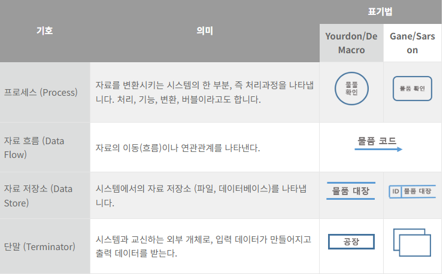
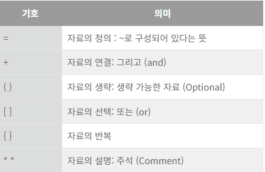
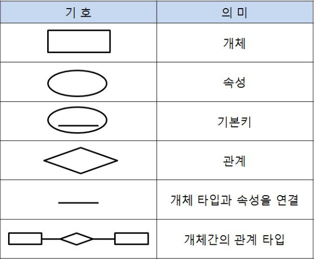
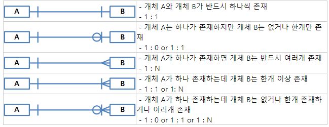

소프트웨어 개발 방법론의 바탕이 되는 것으로, 소프트웨어를 개발하기 위해 정의하고 운용, 유지보수등의 과정을 단계별로 나눈것을 말한다.
순서를 역행하지 않고 나야가는 방식이다.
체계적인 문서화 및 단계별 산출물 체크를 통한 프로젝트를 진행한다.
요구사항 => 설계 => 구현 => 테스트 => 요지보수 순으로 진행된다.
사용자의 요구분석을 정확히 판단했는지 확인하기 위해 시제품을 만들어
사용자에게 보여주는 것을 말한다.
가시적이고 이해가 쉬워 관리가 용이하고 사용자 요구사항의 확인이
용이하다.
고객의 요구사항 변화에 유연하게 대응하여 일정한 주기를 반복하면서
개발한다.
고객과의 소통이 우선이다.
정형화된 분석 절차방식에 따라 사용자 요구사항을 문서화하는 방법이다.
정보시스템 개발을 위해 사용되는 방법론으로 data중심이 특징이다.
부품들을 조립해서 자동차를 만들듯이 소프트웨어도 작은 단위의 객체를 만들어서 조립하는 방식으로 개발하는 방법론이다.
문서,소스코드,파일,라이브러리를 재사용하여 개발하는 방법론이다.
특정 제품에 대해 적용하고 싶은 공통된 기능을 정의해서 개발하는 방법론이다.
팀이 중심이 되어 개발 효율성을 높이는 방식이다.
제품책임자, 스크럼 마스터, 개발팀으로 구성되며 제품 책임자는 가장
제품에 대한 이해도가 높은 사람으로 한다.
스크럼 마스터는 객관적인 조언을 해줄 수 있는 사람으로 한다.
요구사항 우선 순위를 기재한 문서를 백로그 라고 하며
제품책임자가 작성한다.
제품 백로그를 작성한다.
스프린트 계획 회의를 한다. 개발 일정 및 담당범위를 정한다.
스프린트기간동안 개발을 한다. 보통 2주에서 4주내로 정한다.
매일 일정한 시간에 모여 진행상황을 공유한다.
스프린트 기간이 끝나면 제품 책임자가 피드백을 진행하고 새로운 스프린트 기간을 정한다.
고객의 참여와 개발과정을 반복하면서 생산성을 높이는 방식이다.
핵심 가치로는 의사소통, 단순성, 욕기, 존중, 피드백이 있다.
고객의 요구사항을 시나리오로 작성한다.
부분적으로 개발이 완료된 제품을 고객에게 보여주면서 피드백을 적용해 나간다.
고객의 설명과 제약조건을 정리하는 것으로 개발 시에 기준 및 근거가 된다. 개발자 사이에 의사소통을 하는 데에도 사용된다.
기술하는 내용에 따라 기능요구사항과 비기능요구사항으로 나눈다.
기능요구사항: 시스템의 행동, 필요한 데이터, 기능등을 기재한다.
비기능요구사항 : 장비,성능, 인터페이스, 데이터, test, 보안, 품질 등을 기재한다.
기술 관점과 대상의 범위에 따라 시스템 요구사항과 사용자 요구사항으로 나눈다.
시스템 요구사항 : 개발자 관점에서 시스템이 제공해야 할 사항을 기재한다.
사용자 요구사항 : 사용자 관점에서 시스템이 제공해야 할 사항을 기재한다.
기호를 활용하여 자료의 흐름을 표현한다.
자료,자료들의 집합, 자료의 흐름, 자료 저장소와 그것들의 관계-범위-단위를 구체적으로 명시하는 것을 말한다.
개체, 속성, 관계를 표현한다.
 
시스템 상호작용, 업무흐름, 컴포넌트 관계, 시스템 구조 등 스프트웨어
등을 그린 도면이다.
구성요소로는 사물, 관계, 다이어그램이 있다.
구조사물 : 모델의 정적인 부분들을 정의하고 개념적 요소를 표현한다.
행동사물 : 모델의 메시지, 상태 등 동적인 부분을 표현한다.
그룹사물 : 모델의 요소들을 그룹으로 묶은 것을 표현한다.
주해사물 : 모델을 설명하는 주석이다.
연관 관계 : 사람과 책의 관계 실선으로 표현한다.
집합 관계 : 컴퓨터와 프린터의 관계 대체가능한 부속품의 느낌이다. 속빈 마름모로 표현한다.
포함 관계 : 현관문과 키의 관계 대체불가능한 부속품의 느낌이다. 속찬 마름모로 표현한다.
일반화 관계 : 커피와 아메리카노 종류를 나타내는 느낌이다. 속 빈 삼각형으로 표현한다.
의존 관계 : 등급과 할인율의 관계이다 a의 변화가 b에게 영향을 준다.
실체화 관계 : 난다와 비행기,나비의 동사와 명사간의 관계이다.
클래스 : 속성, 함수, 변수타입들로 구성된 다이어그램
객체 : 값이 매겨진 행동을 가지고 있는 독립된 객체정보를 표현하는 다이어그램
컴포넌트 : 컴포넌트끼리의 관계를 나타내는 다이어그램
배치 : 소프트웨어와 하드웨어등을 포함한 시스템의 물리적 구조를 표현한 다이어그램
패키지 : 다양한 모델요소를 그룹화한 다이어그램
유스케이스 : 사용자 관점에서 바라본 시스템을 표현. 사람을 기준으로 할수 있는 행동을 나열한 다이어그램
시퀀스 : 상호작용을 시간순으로 나열한 다이어그램
커뮤니케이션 : 동작에 참여하는 객체들이 주고받는 메시지와 객체간의 관계를 표현하는 다이어그램
상태 : 하나의 객체가 다른 객체와의 상호작용으로 변화하는 과정을 나타내는 다이어그램
활동 : 여러 활동들을 시간 순서대로 나열한 다이어그램